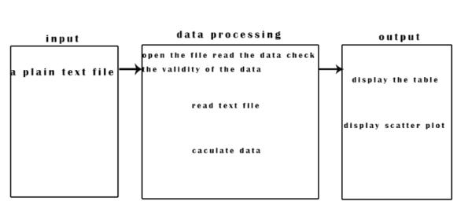

2.1 Source and background of the project
The project is an Online Test Genes System for Little Hill Laboratory in Zhejiang. The Laboratory need identifying differentially expressed genes given a gene expression file containing two cell samp les, but the process of processing data is complex and takes a long time to get result, so the Laboratory needs a system to processing data quickly and out display the result clearly by scatter diagram and table.2.2 User characteristics
2.2.1 Biologists in our lab2.2.2 end-users
2.2.3 web site maintainers
2.2.4 Potential user: Student or teacher who study in the field of biological genetics
2.3 Structure of the systemStructure of the system
Based on the description of the user, the system should be divided into two parts: client and server. Client upload gene expression file and then the server read the file to proce ss data. Their relation are described as following:2.3.1data flow diagrams

2.3.2 IOP diagram (Input Process Output) 
2.3.3 Screen sketches
The application has a simple interface with only one button. Our scientists can upload a plain text file containing two samples of gene expression levels representing two experimental conditions.